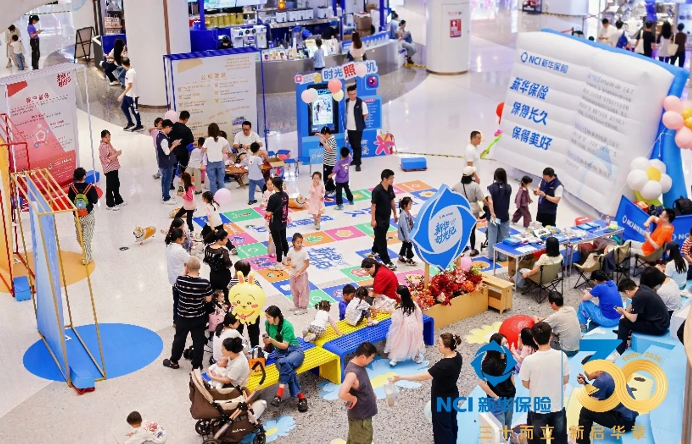
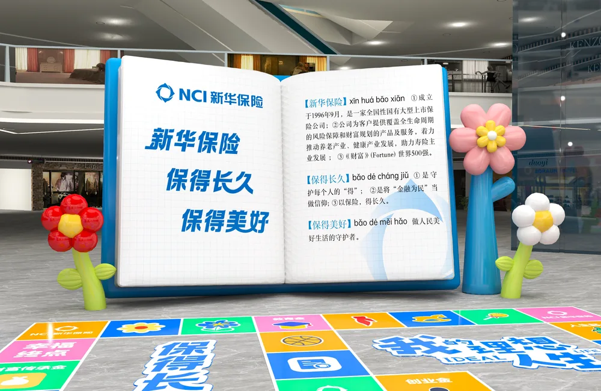
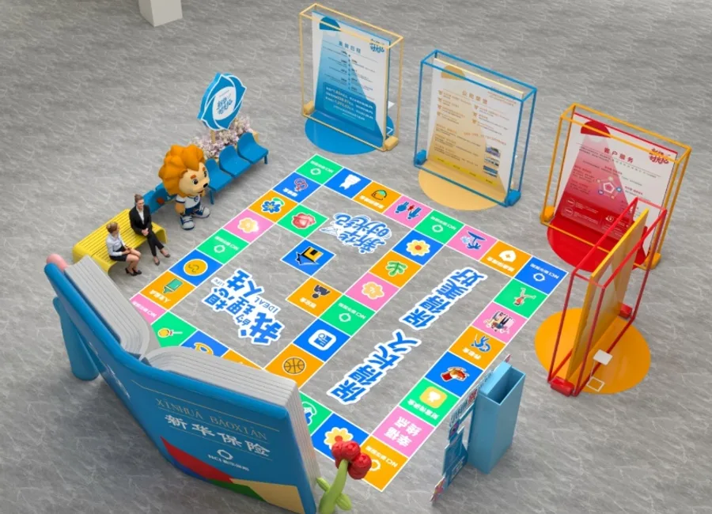

把一次周年庆，做成可转化的城市体验。
围绕“品牌展示 + 业务支持”双目标，统筹创意主题、五区场地、预算、协作机制、供应商执行与结案复盘。
- 策划“时光之书”与人生棋盘体验
- 联动业务、消保与媒体资源
- 按站复盘客流、线索与传播表现
我的角色 项目总牵头 · 方案与预算 · 跨部门协同 · 供应商与媒介统筹
五区 / 五周末 / 十天
围绕“品牌展示 + 业务支持”双目标，统筹创意主题、五区场地、预算、协作机制、供应商执行与结案复盘。


福田、龙岗、宝安、龙华、罗湖五区巡展；罗湖站两天沉淀 381 条线索。项目期业务侧反馈：间接助力保费 7,705 万元、增员 71 人。